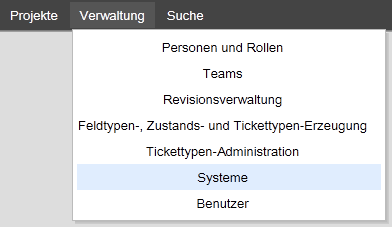
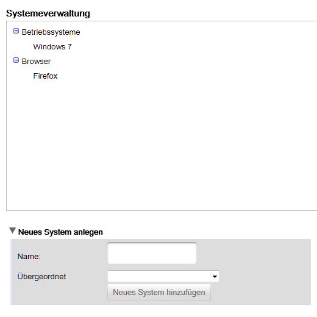
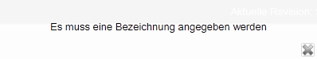
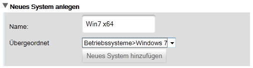
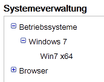
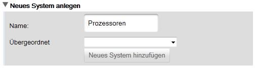
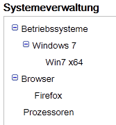

Systeme verwalten
Um die in der Anwendung zur Verfügung stehenden System verwalten zu können gehen Sie über die Navigation zum Menüpunkt Verwaltung->System.

Es öffnet sich anschließend die Maske mit den in der Anwendung hinterlegten Systemen in Form einer Baumstruktur.

Sie haben zurzeit nur die Möglichkeit System der Anwendung hinzuzufügen, nicht aber zu löschen oder zu ändern.
Systemname definieren
Um ein neues System der Anwendung hinzuzufügen, müssen Sie dem System zunächst einen Namen geben. Dieser darf weder leer sein noch nur aus Leerzeichen bestehen. Sie erhalten sonst beim Hinzufügen die folgende Fehlermeldung:

Übergeordnetes Element
Das übergeordnete Element definiert, wo sich das neu definierte System einordnet. Wird in diesem Beispiel als übergeordnetes Element "Windows 7" angegeben, so wird das neue System ein Kind-Element von "Windows 7".


Wird als übergeordnetes Element nichts angegeben, so bedeutet dies, dass das System ein Wurzelelement ist, welches sich auf der gleichen Ebene befindet wie "Betriebssysteme" und "Browser" (in diesem Beispiel).


Created with the Personal Edition of HelpNDoc: Single source CHM, PDF, DOC and HTML Help creation